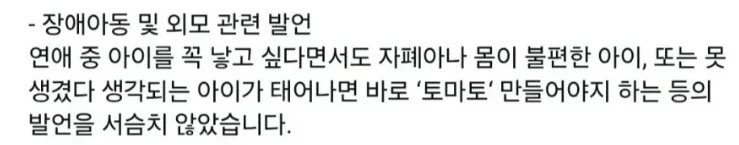
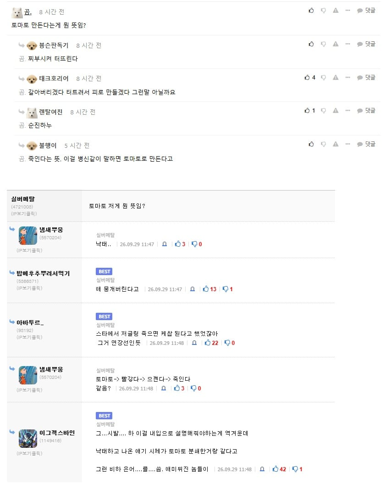
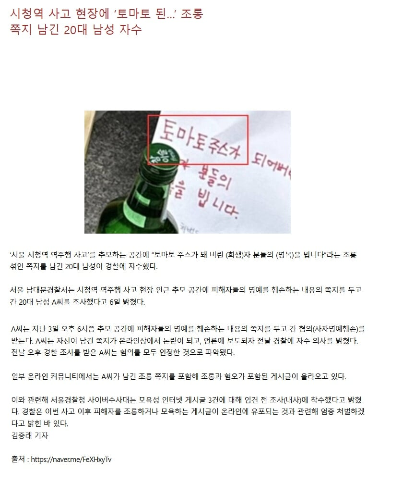

의미는 대충 이럼

기원은 여기서 시작된듯...


의미는 대충 이럼

기원은 여기서 시작된듯...
디시 존나해도 저 표현은 첨보네
잠깐 유행했었음 마갤이런데 말고
그...낙태하면 갈아 내는데... 그뒤에 질감이 토마토 갈아놓은 거같아서 그럴걸...
나도 이런 건 처음 들었어 그 악독하다는 디시갤러들 사이에서도 못들어본 거 같은데
도대체 어떤 커뮤를 하고 다녔길래 저런 말 쓰는건지 의문
아 시발 왜 들어왔을까
와... 와............
펨베는 혐오표현도 창의적이네
ㄹㅇ 틀딱 축리웹 다운 표현.. 개드립엔 펨코유저 별로 없어서 다행임
많음 고렙 유저들중에
개드립오는 글들이 대부분 펨코발이여ㅋㅋㅋㅋㅋ
드립까지 토씨하나 안바꾸고 가져오는데 개드립에 소속감느끼냐
펨베는 왜나옴?
저게 아니라 거의 1~20년전쯤에 햄스터 전문으로 죽이면서 싸이엔가 올리던 색기가 어느날 믹서기로 갈아버리고 한 말 아니였었나..
이거랑 그... 햄스터 그거 아님...?
병아리 아님? 이젠 빨강이네? 그거
그건 술먹은아버지 자다가 병아리 압사
혐오외길인생의 생각은 정말 다르구나
진짜 어느 심연에서 놀아야 저딴 비하발언을 쓰는거냐
평소 저런 생각을 숨기며 살아왔다는것 자체가 얼마나 음험한지 상상조차 되지 않음
첨들어봄
토마토드립은 진짜 첨보는데
나도 토마토 이번에 처음 알게됨ㅅㅂ
케찹됐어의 변형인갑네
저글링 스톰뿌리면 케첩된다가 아니었어?
당장 이번에 스타크래프트 자치령 시네마틱에서도 토마토 나오잖어..
내가 아는 토마토는 멋쟁이 토마토 밖에 없어
역겨운 베충이 찌꺼기 새끼들
패드립을 쳐들어도 미친놈 하고 마는 수준인데 진짜 저 드립은 인간으로써 경멸이 느껴지네
근데 딱 토마토 만든다는거 보자마자 그냥 빨간 토마토 터진거 연상되던데
으 씨발 단어선택 진짜 개역겹네
헐 미친새끼들
어원이 제각각인거 보면 흔한 커뮤에서 쓰는 말은 아닌건 확실한 듯
가끔 보는 표현인데 토마토는 처음듣네
보통 케찹아녔어? 개드립한정으론 이젠 빨강이네?